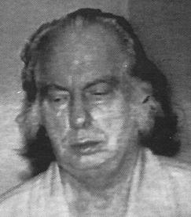
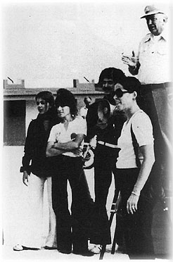

Chapter 19
Atlantic Crossing
'REVIEW OF AVAILABLE INFO REGARDING OVERSEAS ACTIVITIES CHURCH OF SCIENTOLOGY REVEALS ONLY THAT ITS FOUNDER L. RON HUBBARD IS ECCENTRIC MILLIONAIRE WHO HAS BEEN EXPELLED FROM RESIDENCE IN SEVERAL COUNTRIES BECAUSE OF HIS ODD ACTIVITIES AND BEHAVIOUR. HE IS OWNER OF SEVERAL SHIPS WHOSE APPEARANCE IN PORTS IN VARIOUS PARTS OF WORLD HAVE STIMULATED QUERIES . . . FROM OTHER GOVERNMENTS ASKING INFO RE VESSELS MISSION AND CREW. RESPONSES INDICATE WE KNOW VERY LITTLE . . .' (Outgoing signal from CIA headquarters, Langley, Virginia, 16 October 1975)
 (Scientology's account of the years 1972-75.)
(Scientology's account of the years 1972-75.)
Hubbard did not join the exodus on the Lisbon-bound ferry from Tangier; he was driven from Villa Laura to the airport, where there was a direct flight leaving for Lisbon that afternoon. Sea Org personnel were waiting to meeting him in the Portuguese capital and they hurried him through the airport to a waiting car which headed downtown to the Lisbon Sheraton. The Commodore then sat fretting in his hotel suite for several hours while lawyers in Paris, Lisbon and New York assessed the risk of his extradition to face fraud charges in France. Ordinarily, he would have avoided such legal imbroglio by sailing away from it in his flagship, but the Apollo was in dry dock and thus provided no sanctuary.
With Hubbard in the hotel were Ken Urquhart, Jim Dincalci and Paul Preston, a former Green Beret recently appointed as the Commodore's bodyguard. Urquhart said that Hubbard was 'fairly relaxed' and gave them a little briefing on the need to maintain 'safe spaces'.[1] Dincalci disagreed: 'He was very nervous and afraid of what might happen. I could see he was shredding. After two or three hours there was a telephone call from the port Captain. When he put the phone down he said, "This is really serious. I've got to get out of here now".'[2]
Urquhart was sent out to book seats on the first available flight to the United States and collect some cash. It was agreed that Preston would travel with Hubbard and Dincalci would 'shadow' them so that
_______________
1. Interview with Urquhart
2. Interview with Dincalci
he could inform the ship immediately if there were any problems. The loyal Urquhart returned with three Lisbon-Chicago tickets on a flight leaving early next morning. Although he had booked them through to Chicago, the flight stopped in New York and he suggested they got off there in case there was a 'welcoming party' waiting at Chicago's O'Hare airport. He also had a briefcase stuffed with banknotes in different currencies - escudos, marks, francs, pounds, dollars and Moroccan dirhams, about $100,000 in total; it was the best he could do, he told Ron.
The flight left next morning after only a short delay, with Dincalci sitting several rows away from Hubbard and Preston. At J.F. Kennedy airport in New York, Dincalci stood behind them in the Customs queue and looked on in horror as a Customs officer told Hubbard to open his briefcase. Having looked inside he promptly invited Hubbard to step into an interview room.
'As they took him away I thought, oh God, that's it, now everyone will know L. Ron Hubbard is back in America,' said Dincalci. 'He came out about fifteen minutes later looking like a zombie. He'd had to give them a lot of information about the money. He got into a taxi outside and I said, "Where are we going?" He said, "I can't think." He was literally in shock. We drove into Manhattan and he pointed to a hotel, it was a Howard Johnson's or something like that, and said, "We'll stay there."'
The three of them checked in using false names: Hubbard was Lawrence Harris, Preston was Don Shannon and Dincalci was Frank Morris. Dincalci then went across the street to a deli and bought lunch. Back in the hotel, he asked the Commodore if he should return to the ship, but Hubbard did not seem to understand the question. Next day, he sent Dincalci out to buy clothes for all of them and to look for a place to live; the question of Dincalci returning to the ship was never mentioned again.
Dincalci soon found a suitable apartment in Queens, in a fifteen-storey building with its own heated swimming-pool called 'The Executive'. It was in a safe, upper middle-class residential area close to Forest Hills and convenient for the subway. For the first few weeks, Hubbard did nothing but watch television all day long, switching from channel to channel, absorbed by everything from soap operas to rock music shows.
The America to which Hubbard had returned after an absence of nearly a decade had changed beyond his recognition, particularly when viewed through a colour television screen. It was a country obsessed with the unfolding revelations of Watergate, haunted by a war incomprehensibly lost in Vietnam and beset by crises, not least in confidence. The Commodore of the Sea Org knew little of the black
crisis, the urban crisis, the drugs crisis, the energy crisis or any of the events that were branded into the American conscience by place names such as Kent State, Attica and Chappaquiddick.
While Preston stayed in the apartment to look after Hubbard, Dincalci went out every day to the United Nations building to research international extradition laws. A few days before Christmas 1972, he returned to the apartment and told Ron he was in the clear; he had established beyond doubt that the United States would not extradite its own citizens. Hubbard began making plans to travel, to visit the org in Los Angeles. He even thought about throwing a party, but within a couple of days a message arrived from the Guardian's Office in California telling him he was still not safe and to stay undercover. It was a cheerless Christmas.
The Guardian's Office was the conduit for communications with the Commodore and the strictest security prevailed to prevent his whereabouts being discovered. Preston picked up and delivered the mail every other day at a post office box in New Jersey. Everything was in code and no personal mail of any kind was forwarded. Telephone calls were similarly coded, using the page numbers of the American Heritage Dictionary - 345/16 was the sixteenth word from the top on page 345. Preston would go to a payphone well away from the apartment, call the Guardian's Office in Los Angeles and reel off the numbers. If there was an incoming message he used a small tape machine to record it and transcribed it when he got back to the apartment.
When they were out and about in New York, both Dincalci and Preston went to inordinate lengths to ensure they were not being tailed, frequently back-tracking and crossing from an uptown to a downtown train. Travelling on the subway, they would choose a stop at random, hold open the doors as they were beginning to close and leap out at the last moment.
Inside the apartment, a routine was soon established. Dincalci got up early and went out to do the day's food shopping and buy the paperback books that the Commodore read voraciously. 'I soon got to know what he liked,' said Dincalci. 'It was all blood and thunder escapist stuff. I'd choose them by the cover - the more lurid the cover, the more he liked them.' Hubbard woke at about ten or eleven o'clock; the television was turned on immediately and stayed on for the remainder of the day, even if he was reading or writing.
While Dincalci was out running errands for the Commodore, Preston stayed in the apartment to prepare breakfast and lunch. Dincalci cooked dinner when he got back in the evening. For the first two months it was always fishsticks, breaded chicken, steaks or hamburgers, until Hubbard tired of the diet and encouraged Dincalci to try other dishes.
After dinner Hubbard had a single tot of brandy and sometimes talked into the night. 'He'd jump around from subject to subject,' said Dincalci. 'One minute he'd be talking about how an angel had given him this sector of the universe to look after and next minute he'd be talking about the camera he wanted me to buy for him next day. I used to watch him talking; sometimes his eyes would roll up into his head for a couple of minutes and he'd be kinda gone. One of the things that upset him was that he'd never gotten back the money that he had stashed away in previous lives. There was some inside the statue of a horse in Italy which he had hidden in the sixteenth century. He was a writer and had written The Prince. "That son-of-a-bitch Machiavelli stole it from me," he said. He talked a lot about his childhood and all the horses he had ridden when he was little, how he would get on them before he could walk. I didn't get the impression that it was a happy childhood, not at all. There was a lot of bitterness there about his parents. He said, over and over, he had graduated from George Washington University. "They say I didn't," he used to complain, "but I did." He said that he was editor of the University paper for four years and that would prove it.
'He said that when Pearl Harbor was bombed he was on some island in the Pacific and he was the senior person in charge because everyone else had been killed. He was controlling all the traffic through the island until a bomb exploded right by him at the airport and he was sent home, the first US casualty of World War Two. He had a big fatty tumour, a lymphoma, on the top of his head which he said had slivers of shrapnel in it. We had it X-rayed once and had the film enlarged fifty times to find the shrapnel, but there was nothing there. When he came back from the war his first wife didn't go to see him, even though he was wounded. He had nothing good to say about her. His second wife, whom he never really married, was a spy who had been sent by the Nazis to spy on him during the war.
'Most nights I'd give him a massage before he went to bed and he always said he felt better for it. In my mind I never questioned anything he said except once when he was talking about out-of-the-body experiences and how beautiful it was to sit on a cloud. I was always running about New York looking at things for him and I thought if he was such hot shit, why did I have to go and look? Why couldn't he go out of his body and take a look himself?'
In February, Hubbard began to get jittery about the security in the Executive building and Dincalci was asked to look for somewhere with a 'lower profile'. He found a large apartment in a scruffier neighbourhood of Queens - a nondescript second-floor walk-up in the middle of a block on Codwise Place - owned by a Cuban family who lived on the first floor of the house. Dincalci paid three months' rent in advance, in
cash, and said his brother and his uncle would be moving in immediately.
|
 |
| Most official photographs of Hubbard published by the Church of Scientology show him in the golden days of the Apollo voyages or earlier. This one, taken from a 1973 television documentary, shows the 'Commodore' to be deteriorating rapidly. (From Lamont, Religion Inc., 1986) |
His aching teeth appeared to trigger other complaints and Dincalci was driven to distraction trying to nurse an intractable and irritable elderly patient who was at first reluctant to consult either doctor or dentist. When one of Hubbard's rotten teeth dropped out, Dincalci painstakingly ground all his food. Eventually Hubbard agreed to seek professional medical help. On visits to a chiropractor in Greenwich Village he always wore a wig as a disguise and on one occasion Dincalci and Preston took the be-wigged Commodore to a local Chinese restaurant for his favourite dish, egg foo yong. It was their only social outing.
On the recommendation of an allergist, Hubbard began a regular course of injections, administered by Dincalci, which seemed to help him. As his health improved, he started taking more interest in the affairs of the Church of Scientology, even writing bulletins with some of his old enthusiasm. 'He wrote tremendously fast by hand,' said Dincalci. 'It was like automatic writing you get in the occult. He'd have a glazed look, as if he was kinda gone, his eyes would roll up and the corners of his mouth would turn down and he'd start this frenzied writing. I've never seen anyone write so fast.'
Now sixty-two, Hubbard was also beginning to ponder his place in posterity. The Church of Scientology had been swift to make use of the recently enacted Freedom of Information Act, which had revealed that government agencies held a daunting amount of material about Scientology and its founder in their files, much of it less than flattering. Hubbard, who had never been fettered by convention or strict observance of the law, conceived a simple, but startlingly audacious, plan to improve his own image and that of his church for the benefit of future generations of Scientologists. All that needed to be done, he decided, was to infiltrate the agencies concerned, steal the relevant files and either destroy or launder any damaging information they contained. To a man who had founded both a church and a
private navy this was a perfectly feasible scheme. The operation was given the code name Snow White - two words that would figure ever more prominently over the next few months in the communications between the Guardian's Office in Los Angeles and the Commodore's hiding place in Queens, New York.
In September 1973, Hubbard got word from the Guardian's Office that the threat of extradition had diminished and it was safe for him to return to the ship and, coincidentally, to his wife and children. He left next day, with Paul Preston, on a Boeing 747 bound for Lisbon, leaving Dincalci behind to pack up all their belongings and close the apartment at Codwise Place.
No one on the ship knew where Hubbard had been for the previous ten months, nor that he was returning, but his arrival back on board was predictably cause for celebration.
'When he came back on board he looked better than I had ever seen him look,' said Hana Eltringham. 'He was bright and bouncy, busting out all over. He had lost weight and could hardly contain his happiness at being back.'[3]
If there was an emotional reunion with Mary Sue and the children, it was not widely observed. Instead, Hubbard gathered the crew on A deck to explain that he had been away touring the orgs in the United States, raising quite a laugh when he said that he had walked into some of them without being recognized. Preston, sitting at the back of the room, knew it was a lie but obviously said noticing; he had once driven Hubbard past the New York org but all the Commodore had said was that he thought it needed a bigger sign.
While Hubbard had been away, his accommodation on the Apollo had been extended and improved and his research room had been totally encased in lead, insulated from contact with the hull, to make it sound-proof. A working party had spent three months crawling through the ventilation shafts and scrubbing them with toothbrushes in order that he would no longer be troubled by his well-known allergy to dust. In the previous few weeks the ship had been cleaned from stem to stern and every deck subjected to a 'white glove inspection'. Any ledge or fiat surface that produced a smudge on the fingers of a white cotton glove resulted in the entire area being cleaned again.
The Commodore soon had the ship on the move and there were many light hearts on board when the Apollo weighed anchor and set sail, after almost a year in dock in Lisbon. She headed north along the Atlantic coast of the Iberian peninsula, stopping for a few days at the historic cities of Oporto and Corunna, then turning south again to Setubal and Cadiz. At the beginning of December, she returned to Tenerife in the Canary Islands, one of her regular ports of call before the Lisbon re-fit.
_______________
3. Interview with Eltringham
Hubbard wanted to spend some time ashore in Tenerife taking photographs, and his cars and motor-cycles were unloaded on to the dock. He had at his disposal a big black Ford station wagon, a 1962 yellow Pontiac Bonneville convertible and a Land Rover, but as often as not he chose to make his forays ashore astride his monstrous Harley Davidson, on which no doubt he cut a particular dash.
One afternoon, snaking round the switchback curves up in the volcanic mountains of Tenerife, Hubbard skidded on a patch of loose gravel, lost control and fell off, smashing several cameras that were on straps round his neck. Although in considerable pain, he managed to get back on the bike and ride it down to the port. He let it drop on the quayside and staggered up the gangway of the Apollo with his trousers torn and the mangled cameras still around his neck. Jim Dincalci, back on board as medical officer, was summoned immediately. Only too well aware that he was not qualified to deal with broken bones or possible internal injuries, he suggested that the Commodore should be taken to a hospital for a check-up. Hubbard refused adamantly, but huffily agreed to be examined by a local doctor. He prescribed rest and pain-killers, to be taken two at a time as required.
After the doctor had left the ship, Dincalci, who still clung to the remnants of a conviction that an operating thetan had no need for anything as mundane as a pain-killer, offered the Commodore a single pill and a glass of water.
'Why only one?' Hubbard snapped, his eyes bulging with anger. Dincalci hastily produced a second pill, but Hubbard's temper gave way. He leapt up from his chair and began pacing the room in a fury, shouting unintelligible abuse at the fools in his midst who cared nothing for the fact that he was dying. Suddenly he turned on Dincalci. 'It's you,' he roared. 'You're trying to kill me.'
Dincalci was shattered by the accusation. 'I felt I had rapport with him, I felt like a son to him. It was like having my father say I was trying to kill him. No, it was worse. Here was the man who was trying to save the universe saying I was trying to kill him. I was crushed. I felt I had lost everything; what little self-esteem I had was gone in that moment.'
Dincalci very quickly found himself chipping paint and the ticklish task of nursing the Commodore was handed over to Kima Douglas, a strikingly attractive artist from South Africa who had had two years' nursing experience in the labour ward of the British hospital in Bulawayo. 'I think he had broken an arm and several ribs,' she said. 'He certainly had massive black bruises everywhere. We strapped up his arm and strapped his ribs, but he couldn't lie down so he slept in a chair as best he could. He must have been in agony. He screamed and hollered and yelled. It was absolutely ungodly; six weeks of pure hell.
'He was revolting to be with - a sick, crotchety, pissed-off old man, extremely antagonistic to everything and everyone. His wife was often in tears and he'd scream at her at the top of his lungs, "Get out of here!" Nothing was right. He'd throw his food across the room with his good arm; I'd often see plates splat against the bulkhead. When things got really bad, I'd go and make him English scrambled eggs, well salted and peppered, and toast and butter and take it up to him. I even fed him once.
'He absolutely refused to see another doctor. He said they were all fools and would only make him worse. The truth was that he was terrified of doctors and that's why everyone had to be put through such hell.'[4]
She could not help but recall how he had changed in the months since she first joined the ship. 'My expectation of L. Ron Hubbard was that he would be a psychic person who could look at me and see every evil thing I had ever done in my whole life. I was still searching for something, although I didn't know what, and the thought of someone being able to look into my head both terrified and excited me. I'd been indoctrinated with all the things he could do. There were wild stories that if an atomic bomb was about to go off in Nevada, Ron could defuse it with the power of his mind. At that time everyone was talking about atomic warfare and I truly believed he had come to save the planet. As I walked up the gangway to the ship, he stepped out of his office wearing a white uniform and his Commodore's hat with two messengers close behind him. I was introduced to him and he shook my hand and was very charming. He seemed to be a jovial, happy, golden man. I felt I had arrived.'
Kima called on her unlovable patient every two days, but the burden of day-to-day care fell on the messengers. 'Before the motor-cycle accident he was a very nice, friendly person,' said Jill Goodman [who was thirteen years old when she became a messenger]. 'Afterwards, he was a complete pain in the ass. It was like having a sick, crotchety grandfather. You never knew what he was going to be like when you went in there.'[5]
'He didn't get out of that red velvet chair for three months,' said Doreen Smith. 'He'd sleep for about forty-five minutes at a time, then be awake for hours, screaming and shouting. It was impossible to get him comfortable. None of us got any sleep. I was better with a cushion, someone else was better with a footstool, someone else with cotton padding, so every time he woke up we all had to be in there, fussing around him while he was screaming at us that we were all "stupid fucking shitheads" . . . he was out of control and even the toughies were in tears at times. The red chair to us became a symbol of the worst a human being can be - all we wanted to do was chop it up in little pieces and throw it overboard.'[6]
While Hubbard was still fuming in his red velvet chair, still
_______________
4. Interview with Kima Douglas, Oakland, CA, Sept 1986
5. Interview with Jill Goodman, New York, March 1986
6. Interview with Doreen Gillham
ascribing sinister motives to every mishap and imagined slight, he issued an edict that would introduce another Orwellian feature to life on board the Apollo. Convinced that his orders were not being carried out with sufficient diligence, he established a new disciplinary unit called the Rehabilitation Project Force. Anyone found to have a CI (a 'counter-intention' to his orders or wishes) was to be assigned to the RPF, along with all trouble-makers and back-sliders. 'I was shocked when I heard about it,' said Hana Eltringham. 'To me it was like setting up a penal colony within our midst.'
Since it was only necessary to incur the Commodore's disfavour to be assigned to the RPF, its numbers swelled rapidly. RPF inmates wore black boiler suits, were segregated from the rest of the crew and slept in an unventilated cargo hold on filthy mattresses that were due to be thrown out before the Commodore decided they would be suitable for his new unit. Seven hours' sleep were permitted, but there was no leisure time during the day and discipline was harsh. Meal breaks were brief and the RPF was obliged to eat whatever food was left from the crew meal.
'Things took a real downhill turn around that time,' said Gerry Armstrong, who was then the ship's port captain. 'He became much more paranoid and belligerent. He was convinced there were evil people on board with hidden evil intentions and he wanted to get them all in the RPF. The RPF was used as an incredible daily threat over everyone. If he could smell something cooking from the vents, whoever was the current vents engineer would be assigned to the RPF. If the cook burned his food - RPF. If a messenger complained about someone - RPF.
'His actions definitely became more bizarre after the motor-cycle accident. You could hear him throughout the ship screaming, shouting, ranting and raving day after day. He was always claiming that the cooks were trying to poison him and he began to smell odours everywhere. His clothes had to be washed in pure water thirteen times, using thirteen different buckets of clean water to rinse a shirt so he wouldn't smell detergent on it.
'At that time no one would have dared to think that the emperor had no clothes. He controlled our thoughts to such an extent that you couldn't think of leaving without thinking there was something wrong with you.'[7]
To the relief of the entire crew, the Commodore was more or less recovered from his accident by the time of his sixty-third birthday in March 1974 and the ship resumed its aimless wandering, this time on a triangular course between Portugal, Madeira and the Canaries. But a subtle and bizarre change had taken place in the pecking order on board: after the Commodore and his wife, the most powerful people
_______________
7. Interview with Gerald Armstrong, Boston, February 1986
on the ship were now little girls dressed in hot pants and halter tops - the new uniform of the Commodore's faithful band of messengers.
While Hubbard had been suffering so vociferously, the messengers had assumed many extra little tasks on his behalf. They washed and combed his hair, helped him dress and undress, massaged his back, mixed his special night-time vitamin drink and smeared on his fleshy features the cream he mistakenly believed kept him looking youthful. When he recovered, the messengers continued with these duties and constantly competed with each other to find further little ways of pleasing the Commodore.
The ritual of his ablutions, as devised by the messengers, set the tone for Hubbard's increasingly baroque lifestyle. 'At first I was surprised at all the things we had to do,' said Tanya Burden, who had joined the ship in Madeira as a trainee messenger at the age of fourteen. 'But then I thought this man has studied for fifty years to help the world and has done so much for mankind, why should he have to do anything for himself?
When he woke up he would yell "Messenger" and two of us would go into his room straight away. He would usually be lying in his bunk in his underwear with one arm outstretched, waiting for us to pull him up to a sitting position. While one of us put a robe round his shoulders, the other one would give him a cigarette, a Kool non-filter, light it and stand ready with an ashtray. I would run into the bathroom to make sure his toothbrush, soap and razor were all laid out in a set fashion and I prepared his bath, checked the shampoo, towel and the temperature of the water.
'When he went into the bathroom we would lay out his clothes, powder his socks and shoes and fold everything ready to get him dressed. Everything had to be right because if it wasn't he would yell at us and we didn't want to upset him. The last thing we wanted to do was upset him. When he came out of the shower, he would be in his underwear. Two of us held his pants off the floor as he stepped into them. He didn't like his trouser legs to touch the floor, God forbid that should happen. We pulled up his pants and buckled his belt, although he zipped them. We put on his shirt, buttoned it up, put his Kools in his shirt pocket, tied his cravat and combed his hair. All this time he'd be standing there watching us run around him. Then we'd follow him out on to the deck carrying anything he might need - cloak, hat, binoculars, ashtray, spare cigarettes, anything he could possibly think of wanting. We felt it was an honor and a privilege to do anything for him.'[8]
The messengers were all potential high school cheerleaders in appearance - pretty blondes with even white teeth and red lips, pert little breasts straining against knotted halter tops, bare midriffs, tight hot pants, long tanned legs, bobbysox and platform-soled sandals.
_______________
8. Interview with Tanya Burden, Boston, February 1986
They had devised the uniform themselves, with the Commodore's approval, and it gave them maximum opportunity to flaunt their pubescent assets to advantage.
While male members of the crew competed avidly to deflower the messengers, Hubbard himself never once exhibited any sexual interest in them. 'He never tried anything with me,' said Tanya, 'and as far as I know he never did with any of the other girls. He didn't sleep with Mary Sue; we thought perhaps he was impotent. I think he got his thrills by just having us around.'
'I once asked him why he chose young girls as messengers,' said Doreen Smith. 'He said it was an idea he had picked up from Nazi Germany. He said Hitler was a madman, but nevertheless a genius in his own right and the Nazi Youth was one of the smartest ideas he ever had. With young people you had a blank slate and you could write anything you wanted on it and it would be your writing. That was his idea, to take young people and mould them into little Hubbards. He said he had girls because women were more loyal than men.'
The more the messengers did for the Commodore, the more he came to think of them as the only members of the crew he could trust. At nights, when they were undressing him and going through the elaborate business of getting him ready for bed, he liked to talk to them, sharing confidences and telling them about his adventures. They would sit on the carpet at the end of his bed listening to his stories, wide-eyed, for hours. The special status they enjoyed did nothing for their characters. 'We became', Jill Goodman admitted, 'poisonous little wenches. We had power and we were untouchable.' It was not in the least unusual for a fourteen-year-old messenger to march up to a senior executive on the ship and scream: 'You fucking asshole, you're going to the RPF. That'll teach you to fuck up.' It was unthinkable to answer back; it would have been like answering back to Hubbard.
'A sort of "Lord of the Flies syndrome" began working with the messengers,' said Rebecca Goldstein, who had been recruited into Scientology by her brother, Amos Jessup. 'They were so drunk with their own power that they became extremely vengeful, nasty and dishonest. They were a very exclusive, dangerous little group.'
In May 1974, Hubbard did a very curious thing which perhaps indicated that he was losing his facility to distinguish, even in his own mind, between fact and fiction: he applied to the US Navy for the war medals he had always claimed he had been awarded but knew he had never won.
On 28 May, the ship's liaison office in New York wrote to the Navy Department enclosing an authorization from Hubbard to obtain his medals and asking for them to be forwarded as soon as possible. The
letter provided some helpful background data on Mr Hubbard, quoted from one of his spurious 'official' biographies: 'He served in the South Pacific and in 1942 was relieved by fifteen officers of rank and was rushed home to take part in the 1942 battle against German submarines as Commanding Officer of a Corvette serving in the North Atlantic. In 1943 he was made Commodore of corvette squadrons and in 1944 he worked with amphibious forces.' There followed a list of seventeen medals awarded to Mr Hubbard, including the Purple Heart and the Navy Commendation Medal, many of them with bronze stars.
On 18 June, the Navy Department replied, enclosing the four routine medals awarded to former Lieutenant Lafayette R. Hubbard, US Naval Reserve, and noting, 'The records in this Bureau fail to establish Mr Hubbard's entitlement to the other medals and awards listed in your request.'[9]
The Commodore apparently had no difficulty circumventing this little problem: he quickly put into circulation an eight-by-ten colour photograph of twenty-one medals and palms he had won during the war. Some were missing, he explained to the crew. He had actually won twenty-eight medals, but the remainder were awarded to him in secret because naval command were embarrassed that he had sunk a couple of subs in their own 'back yard'.
In the summer, the Commodore turned his attention from his own image to that of his ship. He was taken with an idea to improve the Apollo's public relations by staging free concerts and dance performances for the local residents at her regular ports of call. After hours of watching television in Queens, he considered himself an expert on popular music and modern dance and believed he had made important 'discoveries' about the nature of rock music and the need for a strong heavy beat. He often demonstrated his theories to a mystified Jim Dincalci. On the ship, he was able to put his ideas into practice with his own band, the 'Apollo Stars', made up of volunteers from the crew chosen at auditions conducted by the Commodore with all the confidence and aplomb of a man who had spent a lifetime in show business.
Ken Urquhart, who probably knew more about music than anyone on board, resolutely refused to become involved. 'My favourite composer was Mozart, not the horrible, raucous noise they were making. They practiced on the deck most afternoons, playing music made up by LRH with a very primitive, animal beat. There was no way I was going to go near them.' Mike Goldstein, who had played drums in a semi-professional group while he was at university, volunteered to play with the Apollo Stars in order to get out of the RPF. 'LRH had said anyone in the RPF who was accepted for the
_______________
9. L.R. Hubbard navy record
band or the dance troupe would be let out. I volunteered because I thought anything was better than running around in a black boiler suit. I was wrong. The band was terrible, awful; it was the most embarrassing thing I have ever done.'
Hubbard's idea was that the Apollo Stars would be playing on the aft well deck each time the ship entered a harbour and that bookings for both the band and dance troupe would be arranged in advance at every port of call. Since he would be making appearances himself, he had a new uniform designed with a suitably theatrical flair. It featured a powder blue kepi with a lavishly gold-braided peak and a cloak in the same hue, lined with scarlet silk. He looked, Urquhart reported, 'most peculiar'.
Quentin Hubbard, now twenty, began rehearsing with the dance troupe and enjoyed it so much he made the mistake of telling his father he would like to be a dancer. 'Oh no you wouldn't,' Hubbard replied. 'I have other plans for you.' There was no further discussion and Quentin was no longer allowed to perform. Not long afterwards, he made a feeble attempt at suicide while the ship was docked at Funchal in Madeira.
'He'd gone missing ashore for a while,' said his friend Doreen Smith, 'and while people were out looking for him he just walked back on board. I went to see him in his cabin to make sure he was OK and found him lying on his bunk. He smiled at me and I said, "Hi, how are you feeling?" He said, "Not so good, my stomach's real upset." Then he said, "Doreen, I've done the most awful thing. I've taken a whole lot of pills." I said, "Oh shit. Get out of the bunk and don't go to sleep." I began walking him around the cabin and said, "You know I'm going to have to tell your Dad, don't you?" He nodded and said, "I know. He'll know what to do."'
Doreen ran to the Commodore's cabin and said 'Quentin's taken some pills.' Hubbard did not need it spelled out. He told Doreen to fetch some mustard from the galley and mixed it into a drink which he made Quentin gulp down. The boy vomited repeatedly and was taken to the sick bay to recover. His father sent down a message that as soon Quentin was well enough to leave the sick bay, he was to be assigned to the RPF. Mary Sue, who had a reputation for protecting her children against the excesses of the ship's regime, was powerless to intervene. She was supposed to be responsible for welfare on board - indeed, she had won a special dispensation from the Commodore to allow married couples in the RPF to spend one night together a week - but knew her husband was in a towering rage over Quentin and there was nothing she could do.
Rebecca Goldstein was among the inmates of the RPF when Quentin arrived. 'It was real tough for him,' she said. 'He was very
delicate and refined, not at all self-important, very unlike his father. He had hardly any facial or body hair and it was very hard to say whether he had started shaving. There were rumours that he'd attempted suicide before. He cringed from his father, he was completely overwhelmed by him.'
The valiant attempts of the Apollo Stars and its associated dance troupe to win the hearts and minds of the Spanish and the Portuguese people did not meet with overwhelming success, although the political climate did not help. There had been a military coup in Portugal earlier in the year and the subsequent unease tended to make the Portuguese nervous of mysterious foreign ships calling at its ports for no apparent reason. The Apollo had also managed to upset the Spaniards by mistakenly attempting to enter a major naval base at El Firol.
The ship's real problem, however, was that its 'shore story' was wearing thin. Portuguese and Spanish port authorities were still being told that the Apollo was owned by a highly successful business consultancy firm, but all they could see was an old, rust-streaked ship, often festooned with ragged laundry and crewed by young people in tattered, ill-assorted uniforms. It was little wonder that suspicions mounted about its activities and rumours took hold that the ship was operated by the CIA.
Jim Dincalci, who had been put ashore to run a port office in Funchal, Madeira, became alarmed by the rumours. 'It seemed to be common knowledge in Madeira that the ship was not what it was supposed to be and most people seemed to think it was a CIA spy ship. I had made friends on the island and had contacts in local Communist cells. The word was that the Communists were out to get the ship next time she arrived in Madeira. I sent telexes to LRH warning him what was happening and advising him not come to Madeira until things had calmed down. I was absolutely shocked to see the ship come into the harbor.'
The Apollo arrived in Funchal on 7 October and moored in her usual berth. Emissaries were sent ashore to advertize a 'rock festival' to be held at the weekend, featuring the Apollo Stars. Late on the afternoon of Wednesday, 9 October, while Mary Sue and several members of the crew were ashore, a small crowd of young men began to gather on the quayside. By the way they were glowering and gesticulating at the ship, it was obvious to those on board that this was not a social call. Soon the crowd, which was growing all the time, began chanting 'C-I-A, C-I-A, C-I-A.'
Nervous Scientologists lining the rails of the ship tried chanting 'CIA' back at the crowd, but it did nothing to lower the tension. Then
the first stone clanged against the Apollo's hull and a bottle smashed on the fore deck. More stones and bottles followed as the crowd's anger spread. The crew scattered to take shelter and began picking up the stones from the deck and throwing them back into the crowd. In a matter of moments it became a pitched battle.
Hubbard, who was watching what was going on from the bridge, got out a bullhorn and boomed 'Communista, Communista' at the crowd. Then he began taking photographs of the stone-throwers with a flash unit, further inflaming their tempers. Several of the crew were hit by flying stones, including Kima Douglas, whose jaw was broken by a large lump of rock that hit her full in the face. On the quayside, one of the crowd opened his trousers, waggled his penis and took a direct hit with a well-aimed stone from the ship.
With stones and sticks and bottles flying in all directions, there was total confusion on board the Apollo. Some crew members would later describe the Commodore as being perfectly cool through the whole incident, others said he appeared to be terrified. Whatever his state, no one was taking charge and everyone was screaming orders. In one part of the ship someone was trying to get together a party to repel boarders; in another, the sea hoses were being run out and trained on the crowd in an attempt to persuade them to disperse.
Any remaining vestige of control among the rabble-rousers vanished when the ship turned its hoses on them. On the quayside there were several motor-cycles belonging to members of the crew and two of the ship's cars - a Mini and a Fiat. All the motor-cycles were hurled into the harbour, then both cars were pushed over the edge of the quay, hitting the water with an enormous splash and quickly disappearing under the surface. Meanwhile, others in the crowd slipped the Apollo's mooring-lines from the bollards and she began to drift away from the quayside.
At this point, the Portuguese authorities belatedly appeared on the scene to restore order. Armed militia were put on board to provide protection, a pilot assisted with anchoring the ship in the harbour and a launch rescued those members of the crew who had been stranded ashore, including Mary Sue. The police demanded the film that Hubbard had been taking during the riot and the Commodore, mighty pleased with himself, dutifully handed over two rolls of unexposed film from cameras he had not been using. It was nightfall before the decks had been cleared of the broken glass and rubble.
Since it rather appeared as if the people of Madeira were no longer interested in a rock concert featuring the Apollo Stars, the ship sailed next day, leaving information with the harbour authorities in Funchal that she was heading for the Cape Verde Islands, 1500 miles to the south. She departed on a purposeful southerly course until she was
out of sight. She then turned west, equally purposefully, prompting the crew to speculate with mounting excitement that the Commodore had decided to return to the United States.
For the next six days, in glorious weather, the Apollo sailed due west across a glassy ocean, followed by sporting dolphins and whales. On 16 October, she put into St George, on the northern tip of Bermuda, to re-fuel and Hubbard announced to the crew that their next port of call would be Charleston, South Carolina. There was an enormous cheer at this news: many of the crew were US citizens and some of them had not been home for years.
Eight miles off Charleston, a coded radio message from the Guardian's Office warned the Commodore that the FBI were waiting on the dock to meet the ship. Hubbard's instinct was to go ashore and brazen it out; Mary Sue was terrified at the prospect and convinced that her husband would be immediately arrested. A furious argument followed. 'Everyone could hear them screaming at each other for about two hours,' said Hana Eltringham. 'She was adamant that we should not go ashore. She said he would be indicted ten or fifteen times and it would be the end of him and she wasn't going have it.'
For once, Mary Sue won. Hubbard called his senior aides together on the promenade deck and said there was to be a change of plans. He was going send a signal to Charleston to say that the ship was heading north to pick up spare parts in Halifax, Nova Scotia. Then they were going to sail south, to the Caribbean.
The Apollo docked at Freeport in the Bahamas two days later, while FBI agents waited patiently in Halifax, Nova Scotia. It did not take them long to find out what had happened, however, and the ship was doggedly tracked as she meandered from island to island around the Caribbean for the next twelve months. If no one in Washington could make out what L. Ron Hubbard was up to, it was hardly surprising, because L. Ron Hubbard did not know himself.
It seemed the Commodore was simply enjoying a Caribbean respite while he decided on his next move. He had a set of tropical uniforms made for himself in white silk and the messengers were also kitted out in tight white uniforms, with mirrored sunglasses - an innovation suggested by the Commodore which gave them an appropriately sinister appearance. At most ports of call, the Apollo Stars trundled ashore to perform for apathetic audiences with nothing better to do than sit in the sun at a free concert and wonder where the musicians had come from. The Commodore took up photography again and attempted to ingratiate himself with local politicians by offering to take their portraits. He photographed the Prime Minister and members of the opposition in Curaçao and spent some time at a convent taking pictures of nuns. He was very pleased with the result and sent a
framed enlargement, and a cheque for $1000, to the convent to thank the nuns for their co-operation.
He could well afford it, as Kima Douglas knew better than anyone. 'While we were in the Bahamas, a story came out that the Swiss were going to change the tax laws in some way that would affect the money we held there. The old man went crazy. I heard him screaming and yelling and ran upstairs to find what was wrong. He was pacing up and down and shouting at the top of his voice, "Do you know what they're doing? Everything's gone. Gone! Gone! We're going to lose everything."' When he had calmed down a little, Kima suggested that perhaps the money should be moved. Three hours later, she was on a plane to Zurich, with two other Scientologists, carrying handwritten instructions from Hubbard authorizing the transfer of all his assets to a bank in Liechtenstein.
When they arrived, they were taken down into the vault of the bank and shown the money. Kima Douglas, who thought she could no longer be surprised by anything in Scientology, was awestruck. 'Everyone's eyes widened. There was a stack, about four feet high and three feet wide, of dollars, marks and Swiss francs in high-denomination notes. I couldn't begin to guess how much was there, but it was certainly more than the three of us could carry.'
It took nearly two weeks to make arrangements to move the cash to a bank in Liechtenstein and then the serial numbers - the first and last note of each bundle - had to be noted. When the mission returned to the Bahamas, Kima had to describe to the Commodore the exact size of the various piles of money. 'He was very pleased,' she said. 'He thought he'd outdone the Swiss.'
Hubbard's mood, as always, remained mercurial and very much subject to his notorious phobias. He discovered that the unfortunate Hana Eltringham possessed a particularly acute sense of smell and employed her as a 'sniffer dog' to root out the source of the smells that plagued him. 'Whenever he complained of bad smells,' she said, 'I would be called out of my office by a messenger to go to his quarters and crawl around on my hands and knees to try and locate where the smell was coming from. I would trace it to one corner, then we would rip off the wall cladding and very often find something like mildew.'
It was in the interests of every member of the crew to bend over backwards to keep the Commodore sweet, none more so than Kathy Cariotaki, head of the ship's 'household unit', a position which, because of its proximity to the Commodore, almost guaranteed an extended assignment in the RPF. But Kathy had won considerable praise for extracting an apology of sorts from the Greek government after the Corfu debâcle and she used her innate diplomatic skills to good advantage while running the 'household unit'.
'If a cycle started up when he began claiming things tasted funny, you had to be ready to handle it. If a dish didn't taste right, he'd start hollering and yelling that we were starving him and everyone would be under the gun. My solution was to have two back-up meals prepared at dinner every night so that there was always something else to put in front of him quickly.
'Mary Sue was a diet addict, she was always trying this diet or that diet. One day she sent orders down to the galley about what she wanted to eat that evening according to her latest diet. When the meal was served I'd usually listen to see if there was going to be an upset, but this night everything seemed fine so I went into my office. Then a messenger came round and said the Commodore wanted to see me on A Deck lounge. By the time I got there he was hollering at the top of his lungs. I couldn't understand what in the world he was saying until he brought it down several decibels and shouted that the cooks were starving Mary Sue. He'd given her his dinner and I saw that she was shovelling it down like it was the end of the world. She gave me a look which said, "Don't open your mouth."
'Their relationship was very strange. I got them to celebrate their wedding anniversary, organized a special dinner with candles and made sure she had a present for him and he had one for her. Mary Sue was close to the children, but he wasn't - he hardly ever saw them. Diana was married by then and ate with her husband, while the younger children ate with the crew. I initiated Sunday dinners for the whole family and took every opportunity to get them together at birthdays and anniversaries, otherwise they hardly ever saw each other.'[10]
|
 |
| Hubbard directs a 'photo-shoot' in Curaçao, 1974. Later, he would progress to making movies in California. |
In St Vincent, in the spring of 1975, the ship was prepared to receive a surprise visitor from Bremerton, Washington - the Commodore's father. Harry Ross Hubbard was eighty-eight years old and
_______________
10. Interview with Kathy Cariotaki, San Diego, July 1986
very frail, but determined to make peace with his estranged son. The old gentlemen arrived on the quayside in a taxi and the Commodore went down the gangway to meet him - the first time anyone had ever seen him leave the ship to welcome a visitor.
The crew had been ordered to conceal all evidence of Scientology from the Commodore's father, but he was too old and confused to care about such things. He sat talking with his son for hours and wandered amiably about the ship evincing very little curiosity about what was going on. With a plentiful supply of beer and a couple of fishing trips, he was content. When he got back home to Bremerton, he told Marnie, his sister-in-law, that he had had 'a wonderful trip'.[11] He died a few months later.
The Apollo had not been in the Caribbean for long before she again began to arouse suspicions at her various ports of call. She cruised from the Bahamas to the West Indies to the Leeward and Windward Islands, the Netherlands Antilles and back again and rumours of illicit or clandestine activity followed her as tenaciously as the seagulls. In Trinidad, a weekly tabloid newspaper speculated that the ship was connected to the CIA and suggested that the crew was somehow linked with the horrific Sharon Tate murders in Los Angeles. As the American Embassy drily cabled to Washington: 'The controversial yacht Apollo seems to have worn out its welcome in Trinidad'.[12]
To those on board ship, it was obvious that a conspiracy was at work. The Captain, Bill Robertson, explained that Secretary of State Henry Kissinger, who was 'one of the top SMERSH guys', had been bringing pressure to bear and threatening to cut foreign aid to any island that welcomed the Apollo.[13] It made perfect sense to a Scientologist.
Courses were still being held on the ship for senior Scientologists and in June 1975, one of the new students was Pam Kemp, Hubbard's old friend from Saint Hill days. She was shocked to see how much he had aged. 'I saw this figure coming on board in a big hat and red-lined Navy Cloak and I thought if I'm not mistaken that's LRH, although he was very slow and old looking. I went up to him and said, "Hi, Ron." He looked through me like he didn't know who I was. I thought maybe he was a little deaf so I went around another way and as he was coming towards me I said, "Hi, Ron. How are you?" He didn't recognize me, didn't know who I was. I thought, how weird. Later I discovered he probably didn't see me properly because he needed glasses, but would never wear them.'[14]
Not long afterwards, Hubbard suffered a minor stroke while the ship was in harbour in Curaçao. He was rushed to the local hospital, kept in intensive care for two days and then transferred to a private
_______________
11. Interview with Mrs Roberts
12. Los Angeles Times, 29 August 1978
13. Capt. Bill Roberts Debrief transcript, May 1982
14. Interview with Kemp
room, where he stayed for three weeks, with messengers on duty day and night outside his door. 'To keep him in the hospital,' said Kima Douglas, 'we had to bring food from the ship. He wouldn't touch the hospital food, so we ferried every meal out in hot and cold boxes, ten miles each way.' When he had recovered sufficiently to leave hospital, he moved into a cabana bungalow in the grounds of the Curaçao Hilton to convalesce.
While he was there, he despatched an aide, Mark Schecter, to the United States on a top secret mission. Schecter carried a suitcase full of money. His orders were to hand it over to another Scientologist, Frankie Freedman, who had found a motel for rent in Daytona Beach, Florida.
Although only a handful of people were aware of it, the Sea Org's seafaring days were over.